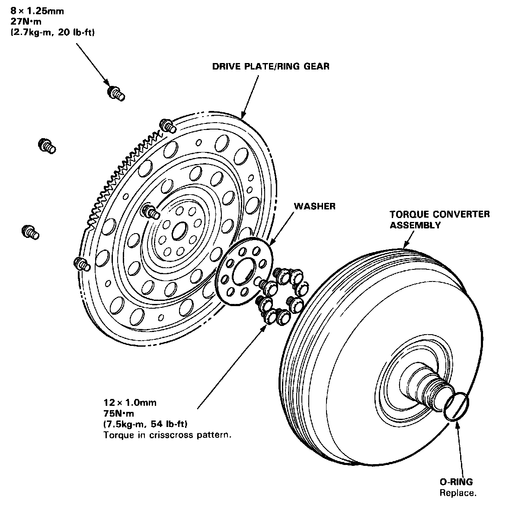
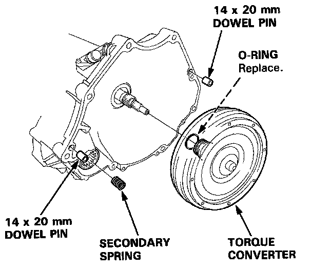

Flex Plate: Service and Repair


INSTALLATION
Attach the torque converter covers to the drive plate with six bolts and torque to 27 N.m (2.7 kg-m, 20 lb-ft). Rotate the crankshaft as necessary to tighten the bolts 1/2 of specified torque, then final torque, in a crisscross pattern. After tightening the last bolt, check that the crankshaft rotates freely.